Montreal real estate statistics, HABR version
- Condo price
- Spatial prices
- Spatial statistics: rent of 4 1/2
- Simple median over quartier
- Rental prices spatial model, whole island
- Rental price map for 4 1/2
- Rental prices spatial model, central part
- Rental price map for 4 1/2
- Plex price spatial model
- Price per sqft for a triplex with 3br and parking in ROI
- area for a triplex with 3br and parking in ROI
- Triplex Profitability (rent per year/triplex total price)
- Spatial statistics: rent of 4 1/2
- Plexes Longitudinal price model, Ahuntsic, Rosemont, Villeray
Condo price
Neighborhood map
plateau<-mtl_p%>%filter(nom_arr=='Le Plateau-Mont-Royal')%>%st_buffer(dist=0)
# near the border between two
neighbourhood<-mtl_p%>%filter(nom_qr %in% c("Saint-Louis", "Milton-Parc"))%>%summarize()
if(file.exists("osm_neighbourhood.RDS")){
osm_neighbourhood<-readRDS(file="osm_neighbourhood.RDS")
} else {
# osm understands information in 4326 projection
osm_neighbourhood<-read_osm(st_bbox(neighbourhood%>%st_transform(4326)), type="esri") # ext=1.5,
# save to file to speedup runs
saveRDS(osm_neighbourhood, file = "osm_neighbourhood.RDS")
}
# my region of interest
ROI_p<-mtl_p %>% filter( nom_arr %in%
c('Le Plateau-Mont-Royal',
'Villeray–Saint-Michel–Parc-Extension',
'Rosemont–La Petite-Patrie',
"Ahuntsic-Cartierville",
"Outremont",
"Ville-Marie",
"Le Sud-Ouest",
"Côte-des-Neiges–Notre-Dame-de-Grâce","Verdun","Westmount","Hampstead","Côte-Saint-Luc","Saint-Laurent","Mont-Royal"
) ) %>% st_intersection(st_geometry(mtl_land)%>%st_buffer(0)) %>%
mutate( arr=factor(nom_arr,
levels=c('Le Plateau-Mont-Royal',
'Villeray–Saint-Michel–Parc-Extension',
'Rosemont–La Petite-Patrie',
"Ahuntsic-Cartierville","Outremont", "Ville-Marie","Le Sud-Ouest",
"Côte-des-Neiges–Notre-Dame-de-Grâce","Verdun","Westmount","Hampstead","Côte-Saint-Luc","Saint-Laurent","Mont-Royal"),
labels=c('Plateau','Villeray','Rosemont','Ahuntsic',"Outremont",
"Ville-Marie","Sud-Ouest","CdN-NdG","Verdun","Westmount","Hampstead","Côte-Saint-Luc","Saint-Laurent","TMR"
)),
qr=as.factor(nom_qr))
#
if(file.exists("osm_roi.RDS")){
osm_roi<-readRDS(file="osm_roi.RDS")
} else {
osm_roi<-read_osm(st_bbox(ROI_p%>%st_transform(4326)), type="esri") # ext=1.5,
# save to file to speedup runs
saveRDS(osm_roi, file = "osm_roi.RDS")
}
# create subset of data
neighbors<-prop_geo_p %>%
filter(type=='Apartment', mprice>0, bedrooms %in% c(1,2,3,4), area_interior<10000, area_interior>0) %>%
st_join(neighbourhood, left=F) %>%
mutate(bedrooms=droplevels(bedrooms), parking=as.factor(parking>0))
tm_shape(osm_neighbourhood) + tm_rgb(alpha=0.7)+
tm_shape(neighbourhood) + tm_borders(col='red',alpha=0.8) +
tm_shape(neighbors) + tm_symbols(shape=3,size=0.2,alpha=0.8) +
tm_shape(ref_home) + tm_symbols(col='red',shape=4,size=0.5,alpha=0.8)+
tm_compass(position=c("right", "bottom"))+
tm_scale_bar(position=c("left", "bottom"))+
tm_layout(scale=1.5)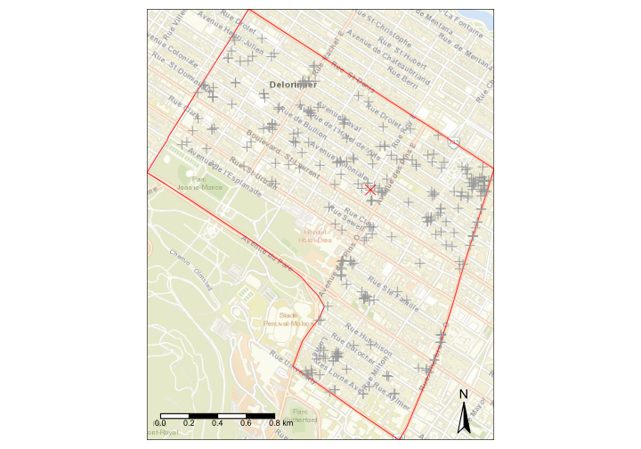
neighbourhood prices,
simple linear model
# convert spatial object into a simple data frame with x and y
neighbors_<-bind_cols(as.data.frame(neighbors),as.data.frame(st_coordinates(neighbors)))%>%rename(x=X,y=Y)
ggplot(neighbors_, aes(y=price, x=area_interior, col=parking))+
geom_point(alpha=0.7,size=2)+
scale_y_continuous( labels = scales::dollar)+
geom_smooth(method='lm')+
geom_vline(data=ref_home, aes(xintercept=area_interior),col='black',lty=2)+
coord_cartesian(xlim=c(400,2000),ylim=c(2e5,1e6))+
ylab('Price')+xlab('Surface sqft')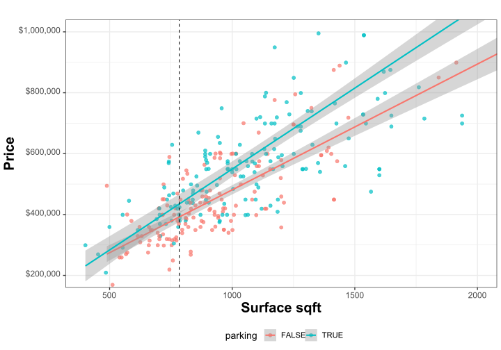
# simple regression model
model_price_lm <- lm(mprice ~ parking:area_interior , data=neighbors_)
print(summary(model_price_lm))##
## Call:
## lm(formula = mprice ~ parking:area_interior, data = neighbors_)
##
## Residuals:
## Min 1Q Median 3Q Max
## -369729 -64800 -9132 55880 690669
##
## Coefficients:
## Estimate Std. Error t value Pr(>|t|)
## (Intercept) 40564.16 22427.94 1.809 0.0715 .
## parkingFALSE:area_interior 438.79 23.57 18.616 <2e-16 ***
## parkingTRUE:area_interior 513.52 19.41 26.459 <2e-16 ***
## ---
## Signif. codes: 0 '***' 0.001 '**' 0.01 '*' 0.05 '.' 0.1 ' ' 1
##
## Residual standard error: 129400 on 311 degrees of freedom
## Multiple R-squared: 0.6989, Adjusted R-squared: 0.6969
## F-statistic: 360.9 on 2 and 311 DF, p-value: < 2.2e-16# predict price
print(predict(model_price_lm, ref_home, se.fit=T))## $fit
## 1
## 443160.1
##
## $se.fit
## [1] 10814.63
##
## $df
## [1] 311
##
## $residual.scale
## [1] 129405.7neighbors_$pred<- predict(model_price_lm)
neighbors_$res <- neighbors_$mprice-neighbors_$pred
ggplot(neighbors_, aes(x=pred, y=res) ) +
geom_point(alpha=0.7,size=2)+
scale_y_continuous(labels = scales::dollar )+
scale_x_continuous(labels = scales::dollar )+
xlab('predicted')+ylab('residuals')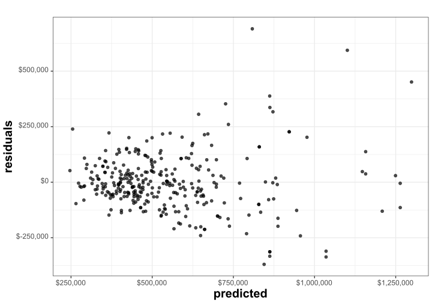
glm model
ggplot(neighbors_, aes(y=price, x=area_interior, col=parking))+
geom_point(alpha=0.7,size=2)+
scale_y_continuous( labels = scales::dollar)+
geom_smooth(method='glm',method.args=list(family = inverse.gaussian(link="log")))+
geom_vline(data=ref_home, aes(xintercept=area_interior),col='black',lty=2)+
coord_cartesian(xlim=c(400,2000),ylim=c(2e5,1e6))+
ylab('Price')+xlab('Surface sqft')
fam=inverse.gaussian(link="log")
ilink <- fam$linkinv
model_price_glm <- glm(mprice ~ parking:area_interior , data=neighbors_, family=fam)
print(summary(model_price_glm))##
## Call:
## glm(formula = mprice ~ parking:area_interior, family = fam, data = neighbors_)
##
## Deviance Residuals:
## Min 1Q Median 3Q Max
## -1.158e-03 -2.304e-04 -3.213e-05 1.643e-04 7.957e-04
##
## Coefficients:
## Estimate Std. Error t value Pr(>|t|)
## (Intercept) 1.230e+01 3.984e-02 308.73 <2e-16 ***
## parkingFALSE:area_interior 7.482e-04 4.486e-05 16.68 <2e-16 ***
## parkingTRUE:area_interior 8.749e-04 3.836e-05 22.81 <2e-16 ***
## ---
## Signif. codes: 0 '***' 0.001 '**' 0.01 '*' 0.05 '.' 0.1 ' ' 1
##
## (Dispersion parameter for inverse.gaussian family taken to be 8.466078e-08)
##
## Null deviance: 8.4965e-05 on 313 degrees of freedom
## Residual deviance: 2.6885e-05 on 311 degrees of freedom
## AIC: 8169
##
## Number of Fisher Scoring iterations: 4# predict price
predict_home<-predict(model_price_glm, ref_home, se.fit=T)
print("prediction and 95% confidence intervals:")## [1] "prediction and 95% confidence intervals:"print(ilink(predict_home$fit))## 1
## 436702.2print(c(ilink(predict_home$fit-2*predict_home$se.fit), ilink(predict_home$fit+2*predict_home$se.fit)))## 1 1
## 421749.4 452185.2neighbors_$pred<- ilink(predict(model_price_glm))
neighbors_$res <- neighbors_$mprice-neighbors_$pred
ggplot(neighbors_, aes(x=pred, y=res) ) +
geom_point(alpha=0.7,size=2)+
scale_y_continuous(labels = scales::dollar )+
scale_x_continuous(labels = scales::dollar )+
ggtitle('GLM Residuals')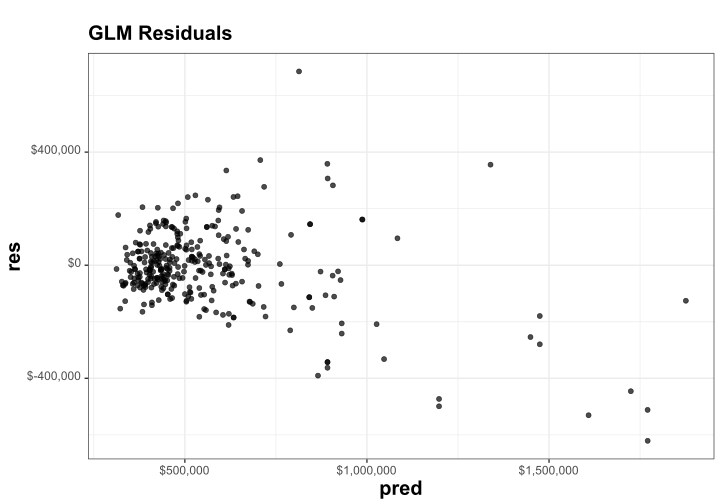
price per square foot
ggplot(neighbors_, aes(y=price_sqft,x=parking, col=parking))+
geom_point(alpha=0.7,size=2,pos='jitter')+
geom_boxplot(alpha=0.5,size=0.5)+
facet_wrap(~bedrooms,labeller = label_both)+
scale_y_continuous( labels = scales::dollar)+
ylab('Price/sqft')+xlab('')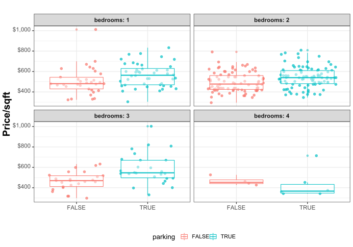
model_psqft <- glm(price_sqft ~ parking + bedrooms, data=neighbors_, family=fam)
print(summary(model_psqft))##
## Call:
## glm(formula = price_sqft ~ parking + bedrooms, family = fam,
## data = neighbors_)
##
## Deviance Residuals:
## Min 1Q Median 3Q Max
## -0.026625 -0.006673 -0.000958 0.004938 0.031624
##
## Coefficients:
## Estimate Std. Error t value Pr(>|t|)
## (Intercept) 6.22330 0.02782 223.695 < 2e-16 ***
## parkingTRUE 0.11456 0.02400 4.772 2.81e-06 ***
## bedrooms2 -0.02917 0.02934 -0.994 0.32080
## bedrooms3 -0.02281 0.03862 -0.591 0.55521
## bedrooms4 -0.18546 0.06694 -2.771 0.00593 **
## ---
## Signif. codes: 0 '***' 0.001 '**' 0.01 '*' 0.05 '.' 0.1 ' ' 1
##
## (Dispersion parameter for inverse.gaussian family taken to be 8.650397e-05)
##
## Null deviance: 0.028868 on 313 degrees of freedom
## Residual deviance: 0.026257 on 309 degrees of freedom
## AIC: 3830.3
##
## Number of Fisher Scoring iterations: 4print("Understanding factors")## [1] "Understanding factors"print(ilink(model_psqft$coeff))## (Intercept) parkingTRUE bedrooms2 bedrooms3 bedrooms4
## 504.3627105 1.1213758 0.9712496 0.9774513 0.8307217# predict price
predict_home<-predict(model_psqft, ref_home, se.fit=T)
print("prediction and 95% confidence intervals:")## [1] "prediction and 95% confidence intervals:"print(c(ilink(predict_home$fit-2*predict_home$se.fit),
ilink(predict_home$fit),
ilink(predict_home$fit+2*predict_home$se.fit))*ref_home$area_interior)## 1 1 1
## 413724.7 430666.5 448302.0Longitudinal condo price model: Loess smoothihg

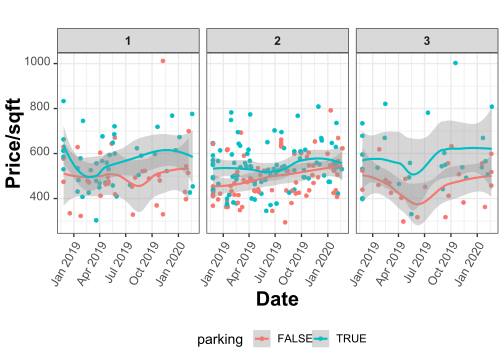
Longitudinal condo price model:GAM model
##
## Family: inverse.gaussian
## Link function: log
##
## Formula:
## price_sqft ~ bedrooms + parking + s(start_date, k = 24)
##
## Parametric coefficients:
## Estimate Std. Error t value Pr(>|t|)
## (Intercept) 6.22248 0.02732 227.797 < 2e-16 ***
## bedrooms2 -0.03438 0.02879 -1.194 0.23335
## bedrooms3 -0.03203 0.03797 -0.844 0.39953
## bedrooms4 -0.18025 0.06643 -2.713 0.00704 **
## parkingTRUE 0.12210 0.02360 5.173 4.17e-07 ***
## ---
## Signif. codes: 0 '***' 0.001 '**' 0.01 '*' 0.05 '.' 0.1 ' ' 1
##
## Approximate significance of smooth terms:
## edf Ref.df F p-value
## s(start_date) 1.971 2.454 5.154 0.00532 **
## ---
## Signif. codes: 0 '***' 0.001 '**' 0.01 '*' 0.05 '.' 0.1 ' ' 1
##
## R-sq.(adj) = 0.109 Deviance explained = 13%
## -REML = 1920.4 Scale est. = 8.3199e-05 n = 314## Analysis of Deviance Table
##
## Model 1: price_sqft ~ parking + bedrooms
## Model 2: price_sqft ~ bedrooms + parking + s(start_date, k = 24)
## Resid. Df Resid. Dev Df Deviance
## 1 309.00 0.026257
## 2 307.03 0.025128 1.9712 0.0011288##
## Family: poisson
## Link function: log
##
## Formula:
## n ~ s(start_date, k = 24)
##
## Parametric coefficients:
## Estimate Std. Error z value Pr(>|z|)
## (Intercept) 0.37645 0.05988 6.287 3.23e-10 ***
## ---
## Signif. codes: 0 '***' 0.001 '**' 0.01 '*' 0.05 '.' 0.1 ' ' 1
##
## Approximate significance of smooth terms:
## edf Ref.df Chi.sq p-value
## s(start_date) 8.955 23 160.6 <2e-16 ***
## ---
## Signif. codes: 0 '***' 0.001 '**' 0.01 '*' 0.05 '.' 0.1 ' ' 1
##
## R-sq.(adj) = 0.349 Deviance explained = 47.8%
## -REML = 304.87 Scale est. = 1 n = 197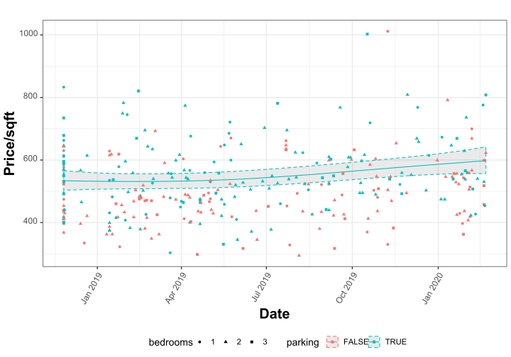
Longitudinal condo price model: prediction
## [1] "prediction and 95% confidence intervals:"## 1 1 1
## 527.7101 549.3195 571.8138Longitudinal condo price model: relative price change
Condo price (sqft) relative to start
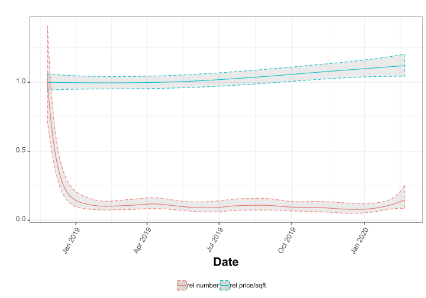
survival analysis
survdiff(Surv(time_on_market, !active) ~ parking, neighbors)## Call:
## survdiff(formula = Surv(time_on_market, !active) ~ parking, data = neighbors)
##
## N Observed Expected (O-E)^2/E (O-E)^2/V
## parking=FALSE 146 117 105 1.491 2.57
## parking=TRUE 168 144 156 0.996 2.57
##
## Chisq= 2.6 on 1 degrees of freedom, p= 0.1surv_type<-survfit(Surv(time_on_market, !active) ~ 1, neighbors_)
p<-ggsurvplot( surv_type, data=neighbors_, conf.int = TRUE,
conf.int.style ='step', censor=F, surv.scale='percent',
break.time.by=30,surv.median.line='hv',
xlim=c(0.0,365.0))
p$plot <- p$plot + theme(legend.text = element_text(size = 5, color = "black", face = "bold"))
p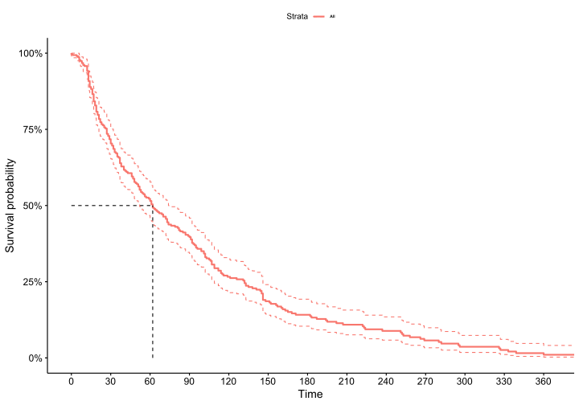
Plex price estimate
selected_mls=17758383
max_distance=2000# 2km
plex_pe<-prop_geo_p %>% filter(type!='Apartment', type!='House') %>%
mutate(parking=as.factor(parking>0), stories=as.factor(stories),type=as.factor(type))
selected<-plex_pe%>%filter(mls==selected_mls) %>% rename(mls_ref=mls)
# selected
print(selected%>%as.data.frame()%>%dplyr::select(mls_ref,area_interior,area_land,type,bedrooms,parking,first_ts))## mls_ref area_interior area_land type bedrooms parking first_ts
## 1 17758383 1765.28 1750 Triplex 3 TRUE 2020-02-05# create a cicrcle around reference
search_roi <- st_buffer(selected, max_distance)
# remove some noise entries
result <- st_intersection(plex_pe %>% filter(mls!=selected_mls), search_roi) %>%
filter(area_interior<10000, area_interior>100,area_land>0,price<1e7,price>100 )
if(file.exists("osm_result.RDS")){
osm_result<-readRDS(file="osm_result.RDS")
} else {
# osm understands information in 4326 projection
osm_result <- read_osm(st_bbox(st_transform(search_roi, 4326 )), ext=1.5, type="esri")
# save to file to speedup runs
saveRDS(osm_result, file = "osm_result.RDS")
}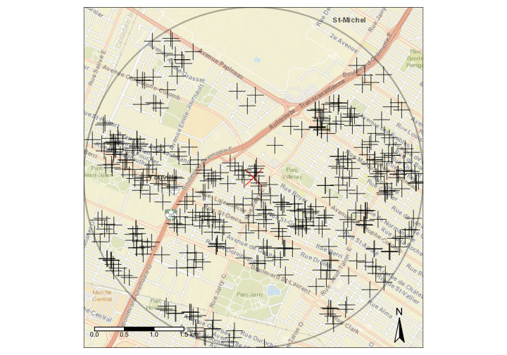
#
ggplot(result%>%as.data.frame(), aes(x=area_interior, y=price, col=type))+
geom_point(alpha=0.7)+
geom_point(data=selected%>%as.data.frame(), aes(x=area_interior, y=price) , size=10, shape='+', alpha=0.9, col='black') +
scale_y_continuous(labels = scales::dollar )+xlim(c(0,5000))+
geom_smooth(method='glm',method.args=list(family = inverse.gaussian(link="log")))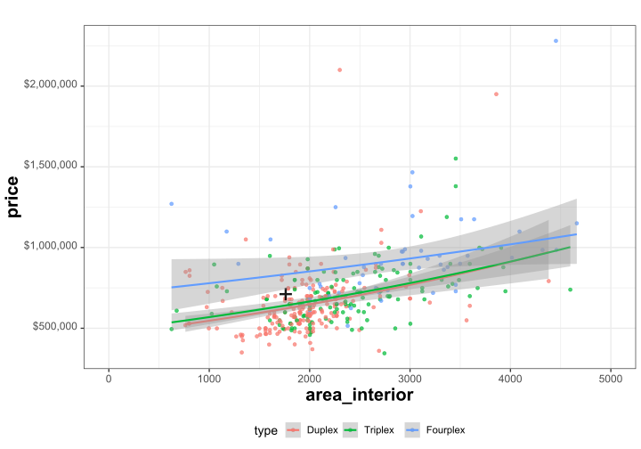
ggplot(result%>%as.data.frame(), aes(y=price_sqft, x=parking, col=parking))+
geom_point(alpha=0.7,size=2,pos='jitter')+
geom_boxplot(alpha=0.5,size=0.5)+
facet_grid(type~bedrooms,labeller = label_both)+
scale_y_continuous(labels = scales::dollar)+
ylab('Price/sqft')+xlab('')
per sqft price regression model
m_plex <- glm(price_sqft ~ type+bedrooms+parking, data=result%>%as.data.frame(), family=fam)
print(summary(m_plex))##
## Call:
## glm(formula = price_sqft ~ type + bedrooms + parking, family = fam,
## data = result %>% as.data.frame())
##
## Deviance Residuals:
## Min 1Q Median 3Q Max
## -0.098291 -0.012601 -0.005437 0.003621 0.093939
##
## Coefficients:
## Estimate Std. Error t value Pr(>|t|)
## (Intercept) 5.7965411 0.0905453 64.018 <2e-16 ***
## typeTriplex -0.1066840 0.0465888 -2.290 0.0226 *
## typeFourplex 0.0343763 0.0734954 0.468 0.6402
## bedrooms2 -0.0005084 0.0913386 -0.006 0.9956
## bedrooms3 -0.0442496 0.0871485 -0.508 0.6119
## bedrooms4 -0.0801371 0.1065306 -0.752 0.4524
## bedrooms5 -0.1019773 0.1764383 -0.578 0.5636
## parkingTRUE 0.1319670 0.0443394 2.976 0.0031 **
## ---
## Signif. codes: 0 '***' 0.001 '**' 0.01 '*' 0.05 '.' 0.1 ' ' 1
##
## (Dispersion parameter for inverse.gaussian family taken to be 0.00053711)
##
## Null deviance: 0.14560 on 402 degrees of freedom
## Residual deviance: 0.13659 on 395 degrees of freedom
## AIC: 4904.7
##
## Number of Fisher Scoring iterations: 7# # predict price
predict_selected<-predict(m_plex, selected%>%as.data.frame(), se.fit=T)
print("prediction and 95% confidence intervals:")## [1] "prediction and 95% confidence intervals:"print(ilink(predict_selected$fit))## 1
## 322.9749print(ilink(predict_selected$se.fit))## [1] 1.043278print(c(ilink(predict_selected$fit-2*predict_selected$se.fit),
ilink(predict_selected$fit),
ilink(predict_selected$fit+2*predict_selected$se.fit))*selected$area_interior)## 1 1 1
## 523820.3 570140.9 620557.6Spatial prices
Spatial statistics: rent of 4 1/2
Simple median over quartier
# summarize by neighorhoods and bedrooms
# only keeping 2 bedroom
rent_by_quartier<-aggregate(filter(kijiji_geo_p,bedrooms==2)%>%dplyr::select(price),mtl_p,median,join = st_contains)
# extract borders of districts
mtl_arr<-mtl_p%>%group_by(nom_arr)%>%summarize()
if(file.exists("osm_mtl.RDS")){
osm_mtl<-readRDS(file="osm_mtl.RDS")
} else {
osm_mtl<-read_osm(st_bbox(mtl_p%>%st_transform(4326)), type="esri",ext=1.5) # ext=1.5,
# save to file to speedup runs
saveRDS(osm_mtl, file = "osm_mtl.RDS")
}
# whole island
tm_shape(osm_mtl)+tm_rgb(alpha=0.6)+
tm_shape(mtl_arr) + tm_borders(alpha=0.7,col='black')+
tm_shape(rent_by_quartier) + tm_fill(col='price',alpha=0.8,breaks=seq(400,2000,by=200),title='$')+
tm_shape(ref_home) + tm_symbols(col='red',shape=4,size=0.5,alpha=0.8)+
tm_legend(position = c("left", "top"),
frame = TRUE, outside = FALSE,
bg.color="white")+
tm_compass(position=c("right", "bottom"))+
tm_scale_bar(position=c("left", "bottom"))+
tm_layout(scale=1.5)
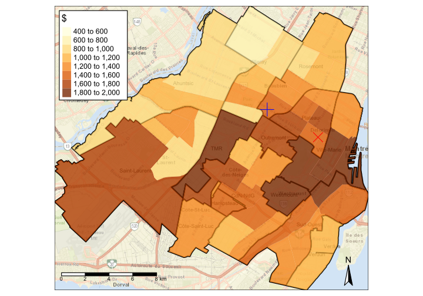
Rental prices spatial model, whole island
##
## Family: inverse.gaussian
## Link function: log
##
## Formula:
## price ~ bedrooms + s(x, y, k = 100)
##
## Parametric coefficients:
## Estimate Std. Error t value Pr(>|t|)
## (Intercept) 6.9242917 0.0021694 3191.743 <2e-16 ***
## bedrooms1 0.0005471 0.0025870 0.211 0.833
## bedrooms2 0.2449609 0.0027388 89.439 <2e-16 ***
## bedrooms3 0.4586584 0.0034735 132.047 <2e-16 ***
## bedrooms4 0.6946183 0.0059213 117.308 <2e-16 ***
## bedrooms5 0.8458260 0.0110996 76.204 <2e-16 ***
## ---
## Signif. codes: 0 '***' 0.001 '**' 0.01 '*' 0.05 '.' 0.1 ' ' 1
##
## Approximate significance of smooth terms:
## edf Ref.df F p-value
## s(x,y) 98.12 98.98 812.7 <2e-16 ***
## ---
## Signif. codes: 0 '***' 0.001 '**' 0.01 '*' 0.05 '.' 0.1 ' ' 1
##
## R-sq.(adj) = 0.547 Deviance explained = 54.6%
## -REML = 7.5656e+05 Scale est. = 6.9015e-05 n = 104895Rental price map for 4 1/2
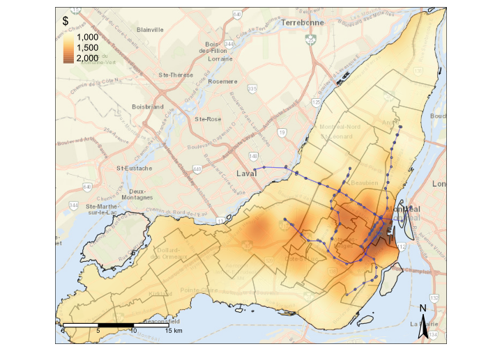
Rental prices spatial model, central part
##
## Family: inverse.gaussian
## Link function: log
##
## Formula:
## price ~ bedrooms + s(x, y, k = 100)
##
## Parametric coefficients:
## Estimate Std. Error t value Pr(>|t|)
## (Intercept) 6.960093 0.002313 3009.122 < 2e-16 ***
## bedrooms1 0.022683 0.002777 8.169 3.15e-16 ***
## bedrooms2 0.281851 0.003004 93.816 < 2e-16 ***
## bedrooms3 0.494016 0.003988 123.878 < 2e-16 ***
## bedrooms4 0.726634 0.006484 112.059 < 2e-16 ***
## bedrooms5 0.843509 0.012560 67.160 < 2e-16 ***
## ---
## Signif. codes: 0 '***' 0.001 '**' 0.01 '*' 0.05 '.' 0.1 ' ' 1
##
## Approximate significance of smooth terms:
## edf Ref.df F p-value
## s(x,y) 97.68 98.97 600.1 <2e-16 ***
## ---
## Signif. codes: 0 '***' 0.001 '**' 0.01 '*' 0.05 '.' 0.1 ' ' 1
##
## R-sq.(adj) = 0.529 Deviance explained = 52.3%
## -REML = 6.442e+05 Scale est. = 6.8437e-05 n = 88393Rental price map for 4 1/2
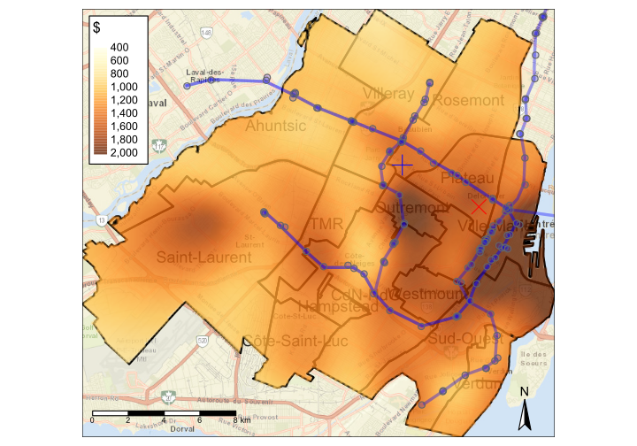
Plex price spatial model
##
## Family: inverse.gaussian
## Link function: log
##
## Formula:
## price_sqft ~ type + bedrooms + parking + s(x, y, k = 100)
##
## Parametric coefficients:
## Estimate Std. Error t value Pr(>|t|)
## (Intercept) 5.71963 0.02517 227.269 < 2e-16 ***
## typeTriplex -0.06820 0.01244 -5.485 4.63e-08 ***
## typeFourplex -0.03992 0.01826 -2.187 0.0289 *
## bedrooms2 -0.02285 0.02502 -0.913 0.3611
## bedrooms3 -0.04356 0.02483 -1.755 0.0795 .
## bedrooms4 -0.04786 0.02965 -1.614 0.1066
## bedrooms5 0.06915 0.05271 1.312 0.1897
## bedrooms6 -0.06575 0.08221 -0.800 0.4239
## parkingTRUE 0.06414 0.01214 5.284 1.39e-07 ***
## ---
## Signif. codes: 0 '***' 0.001 '**' 0.01 '*' 0.05 '.' 0.1 ' ' 1
##
## Approximate significance of smooth terms:
## edf Ref.df F p-value
## s(x,y) 62.2 78.88 13.13 <2e-16 ***
## ---
## Signif. codes: 0 '***' 0.001 '**' 0.01 '*' 0.05 '.' 0.1 ' ' 1
##
## R-sq.(adj) = 0.322 Deviance explained = 37.4%
## -REML = 12939 Scale est. = 0.0002071 n = 2252##
## Family: inverse.gaussian
## Link function: log
##
## Formula:
## area_interior ~ type + bedrooms + parking + s(x, y, k = 100)
##
## Parametric coefficients:
## Estimate Std. Error t value Pr(>|t|)
## (Intercept) 7.52380 0.03298 228.121 < 2e-16 ***
## typeTriplex 0.24187 0.01733 13.954 < 2e-16 ***
## typeFourplex 0.39287 0.02749 14.294 < 2e-16 ***
## bedrooms2 0.04943 0.03272 1.511 0.13097
## bedrooms3 0.17813 0.03280 5.430 6.25e-08 ***
## bedrooms4 0.23820 0.04056 5.873 4.94e-09 ***
## bedrooms5 0.53905 0.07990 6.746 1.94e-11 ***
## bedrooms6 0.40691 0.12476 3.262 0.00112 **
## parkingTRUE -0.01280 0.01630 -0.785 0.43230
## ---
## Signif. codes: 0 '***' 0.001 '**' 0.01 '*' 0.05 '.' 0.1 ' ' 1
##
## Approximate significance of smooth terms:
## edf Ref.df F p-value
## s(x,y) 65.7 82.16 1.92 2.05e-06 ***
## ---
## Signif. codes: 0 '***' 0.001 '**' 0.01 '*' 0.05 '.' 0.1 ' ' 1
##
## R-sq.(adj) = 0.139 Deviance explained = 44.4%
## -REML = 17426 Scale est. = 4.7884e-05 n = 2252Price per sqft for a triplex with 3br and parking in ROI
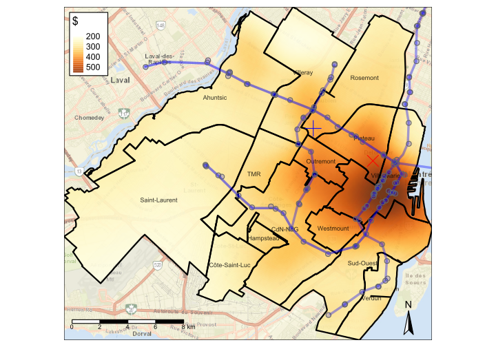
area for a triplex with 3br and parking in ROI
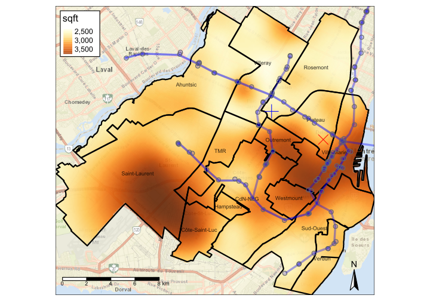
Triplex Profitability (rent per year/triplex total price)
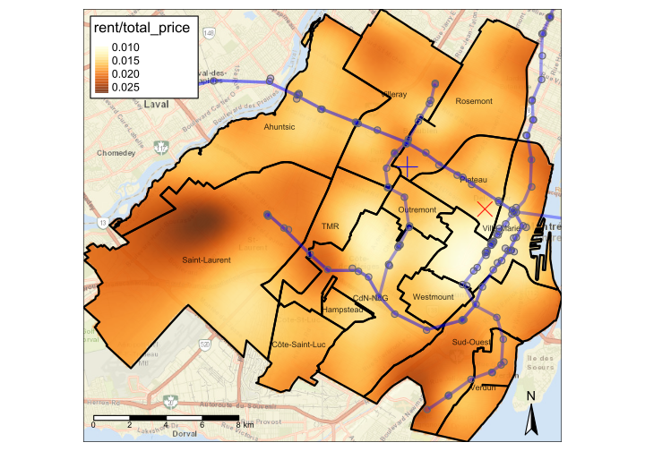
Plexes Longitudinal price model, Ahuntsic, Rosemont, Villeray
##
## Family: inverse.gaussian
## Link function: log
##
## Formula:
## price_sqft ~ type + arr + parking + s(start_date, by = type,
## k = 6) + s(start_date, by = arr, k = 6)
##
## Parametric coefficients:
## Estimate Std. Error t value Pr(>|t|)
## (Intercept) 6.17259 0.01175 525.224 < 2e-16 ***
## typeDuplex -0.18065 0.01704 -10.602 < 2e-16 ***
## typeTriplex -0.22729 0.01787 -12.722 < 2e-16 ***
## typeFourplex -0.19927 0.02389 -8.340 < 2e-16 ***
## arrVilleray -0.29194 0.01839 -15.878 < 2e-16 ***
## arrRosemont -0.14782 0.01701 -8.691 < 2e-16 ***
## arrAhuntsic -0.32195 0.01866 -17.252 < 2e-16 ***
## parkingTRUE 0.05441 0.01164 4.675 3.04e-06 ***
## ---
## Signif. codes: 0 '***' 0.001 '**' 0.01 '*' 0.05 '.' 0.1 ' ' 1
##
## Approximate significance of smooth terms:
## edf Ref.df F p-value
## s(start_date):typeApartment 1.004 1.007 0.842 0.3592
## s(start_date):typeDuplex 2.090 2.566 0.954 0.3281
## s(start_date):typeTriplex 3.513 4.112 2.338 0.0505 .
## s(start_date):typeFourplex 2.040 2.516 0.814 0.5513
## s(start_date):arrPlateau 1.104 1.593 1.273 0.4057
## s(start_date):arrVilleray 2.682 3.236 2.810 0.0360 *
## s(start_date):arrRosemont 1.828 2.267 0.885 0.4134
## s(start_date):arrAhuntsic 1.029 1.054 2.254 0.1346
## ---
## Signif. codes: 0 '***' 0.001 '**' 0.01 '*' 0.05 '.' 0.1 ' ' 1
##
## Rank: 47/48
## R-sq.(adj) = 0.28 Deviance explained = 29.4%
## -REML = 24666 Scale est. = 0.00031759 n = 3996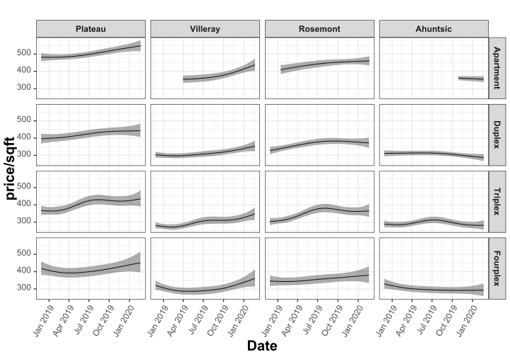